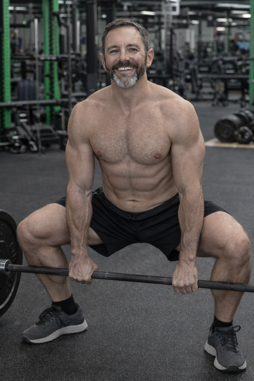

How a detail-obsessed powerlifter rebuilt his first-meet prep in a single conversation — and turned a medical procedure into better programming
When the 5-workout-a-week program didn't fit a 4-day-a-week athlete, the fix took thirty-three minutes. The harder work came next: diagnosing a left-side weakness and resolving it nine days later.
"Something clicked and it's finally feeling natural to me." — Grant, April 8, 2026. Sumo deadlift at 135 lbs, two days after a brief outpatient procedure.

The story
At a glance
- Who: Grant, intermediate-to-advanced powerlifter, first-meet prep, data-driven to the second
- Starting point: Signed up January 23, 2026; configured coach "Marcus" (technical/collaborative); first program built January 24 prescribed five workouts per week for a four-day-a-week athlete
- Primary goals: Complete a 22-week sumo-deadlift meet prep on top of an existing three-stream training system without burning out
- Timeframe: January 24 – April 16, 2026 (≈12 weeks active, 88 workouts logged across 52 training days, 70 coach conversations)
- What changed: A second program designed for the week he actually trains; a structured coaching relationship that diagnoses before prescribing; an adductor asymmetry caught, tracked, and resolved; a sumo pattern that went from "I still don't love it" to "it clicked and feels natural"
The situation
Grant doesn't train in one place, with one coach, toward one thing. He operates a deliberately layered three-stream system: a personal trainer on Monday and Wednesday, a semi-private group fitness class on Thursday, and a circuit-plus-mobility double on Saturday. That's the spine of his week, and it's non-negotiable. NeonPanda was supposed to slot in around it — a dedicated meet prep that respected the fact that his primary programming was already well-handled.
He's also fat-adapted keto (working with a nutrition coach at Virta Health), works from home with a well-equipped office-gym, runs Hinge Health exercise therapy as structured active recovery, and logs sessions with unusual precision — HR averages, zone distributions, calories, session-level enjoyment ratings, exercise names, reps, duration to the second. Body awareness is high. Expectations are specific. Inaccuracy in a coach's response gets corrected on the spot, calmly and without defensiveness.
The program that didn't fit vs. the program that did
The first program, created the day after signup, wasn't wrong — it was miscalibrated.
The 22-Week Mobility & Deadlift Meet Preparation was structurally sound on paper: a phased build toward a first competition with a proper deload cadence. But it prescribed five workouts a week for an athlete whose week only had four gym days available and whose primary trainer was already handling deadlift work and accessories on two of them. For seven weeks Grant worked around the mismatch, skipping some sessions, logging others. Then, on March 17, he surfaced the problem directly:
"Real talk: you have prescribed 5 workouts for me this week and next week. I go to the gym 4 days a week (as you know). I cannot succeed with this program with this volume and also succeed with my real life personal trainer."
He laid out the full structure in two follow-up sentences — Monday and Wednesday PT, Thursday semi-private, Saturday circuit plus mobility — and asked Marcus to scale the program back and treat any extra work as supplemental, not required. His trainer, he noted, was also running deadlift work; the semi-private was already doing deadlift accessories.
Thirty-three minutes later — same conversation, no tickets filed, no settings page opened — a new active program existed: 22-Week Sumo Deadlift Meet Prep, built through an in-conversation program designer session and explicitly scoped as two supplementary sessions per week that slot around the immutable baseline. The old program was paused. The new one was designed to respect what was already working rather than compete with it.
That thirty-three-minute window is the product. Most platforms would have surfaced this as a "submit a request, we'll rebuild your plan." For Grant, it was a coaching conversation that ended with a new block periodization on his screen.
Grant treats inaccuracy like a failed rep: notice it, correct it, expect better on the next set. Across seventy conversations, that standard surfaced a long tail of places where the model would misstate a coach's prescription, blur live program context, or answer as if this thread were the only one that mattered. His calm, specific corrections are a major reason those failure modes got closed — and why AI-generated coach guidance now stays aligned with the program and history an athlete can actually verify in their log.
The same precision shaped how coach and athlete talk to each other: rationale before prescription, diagnostic questions before new load, pacing that respects someone who self-regulates intelligently. What's smooth today in coach–athlete conversation — including continuity that doesn't reset when the week gets complicated — is tied to the standard Grant held in chat.
Under the hood, that also forced cross-conversation intelligence to mature: memories and profile updates that carry across threads so the coach doesn't contradict what it already committed to. In short: the polish on continuity is in no small part thanks to Grant training the product the way he trains sumo — detail-obsessed, patient, unwilling to pretend a miss is good enough.
How the coaching actually works, by example
Three moments from the 12-week window show the coaching relationship earning its keep — and the product mechanism under each.
1.The program re-scope. The March 17 exchange above wasn't just a rescue; it was a demonstration of what "in-conversation program editing" looks like when it works. Marcus had the live program state pulled up inside the chat, reasoned through Grant's full week with him (PT + semi-private + Saturday circuit as protected), and then invoked the program designer with the new brief: supplementary-only, two sessions per week, sumo-focused, same 22-week meet-prep timeline. The product capability — program state retrievable and editable in conversation, plus a program designer that can generate a full phased block plan in-chat — turned a structural conflict into a thirty-three-minute fix. No churn, no re-onboarding, no lost training history.
2.The adductor becomes a diagnostic, then a resolution. On April 5, Grant ran Copenhagen planks and they "brutally exposed" a significant left-side adductor weakness that neither he nor Marcus had been tracking. The product move here is less about the diagnosis itself and more about what happened next. Marcus didn't prescribe immediately. He paused, asked clarifying questions — fatigue or stability breakdown? — and encoded the finding as a behavioral user memory with a specific rule: prioritize unilateral and anti-rotation movements, frame them as "asymmetry diagnostics" rather than accessories, track left vs. right. Every downstream session read that memory first. Copenhagen planks, single-leg RDLs, and split squats were layered into the supplementary blocks with asymmetry tracking built in. On April 14, a new episodic memory recorded the outcome: "A measurable left adductor weakness asymmetry was successfully resolved through targeted Copenhagen plank programming." Nine days, problem named, problem gone.
3.Sumo clicks — on a week most coaches would have written off. A week earlier, on April 3, Grant had told Marcus that sumo was partially "clicking" but that he "still didn't love it" — a candid admission that the mechanics were landing intellectually while the identity ("this isn't a real deadlift") hadn't caught up. On April 6, he underwent a planned outpatient procedure. Marcus reframed the recovery window, in advance, as a deliberate periodization asset rather than a lost week; Grant proactively rescheduled his PT and stayed careful about nutrition and hydration during the clinician-directed prep window. On April 8, two days afterward, he reported that sumo had finally clicked — that it felt automatic and embodied, at 135 lbs. Marcus's response respected an already-documented pattern in the profile: "intellectual acceptance precedes emotional ownership by a meaningful lag; emotional ownership eventually arrives through accumulated positive reps at conservative loads." No hype, no premature load push. The product move — a living profile that had already encoded how this athlete adopts technical change — let the coach meet the breakthrough with the right tempo.
The quiet compounding
Over 12 weeks, Grant's living profile matured to version 14 at 0.97 confidence. It now holds an explicit communication preference sheet (lead with rationale, diagnostic questioning before prescription, don't re-open scheduling discussions unless he initiates), a training identity paragraph that names him as an intermediate-to-advanced powerlifter with a "three-stream training system," a goals list that runs 15 items deep (from tempo sumo work to landmine press progression to a note about following up with support on a logging issue), and a life-context block that tracks his Virta Health nutrition coaching, his Hinge Health level (14), his home-gym setup, and the standing he's earned in his gym community.
The mechanism is mundane — structured memory plus a living profile refreshed after each turn. The effect is that the coach's defaults now match how Grant actually wants to be coached: as a reasoning partner, not a top-down instructor. When Marcus suggested he push through inertia rope work post-arm-fatigue but validated him capping TRX decline rows at 3–4 reps to preserve form, that wasn't coincidence — both moves came from a profile that has observed, in writing, that this athlete self-regulates intelligently and shouldn't be second-guessed on it.
Progress & observations
Twelve weeks is early for first-meet prep, and the pattern here is what a sophisticated intermediate would want: steady technical consolidation rather than load chasing.
- Sumo deadlift: Working load topped at 205 lbs in late February, dropped deliberately into the 30–60 lb range for tempo work (5-second eccentrics) in late March / early April, and rebuilt through a 135/155/175/195 build-up for 4 × 5 reps by April 16. The April 8 session at 135 lbs is logged as the "click" — the nervous-system integration, not the peak load.
- Bench press: 100 lbs × 3 on April 1 inside a density circuit — moving cleanly, not chasing a true 1RM.
- Accessories: Face pulls 23 → 29 lbs between late March and early April; half-kneeling landmine press logged at 55 lbs × 5/side with Grant volunteering "I like the half kneeling landmine press" unprompted (a rare, significant expression of movement affinity, per his own observed-patterns record); Copenhagen plank progression targeted at the adductor asymmetry, resolved nine days after it was identified.
- Emotional series: Across 35 emotional snapshots, averages sit at energy 7.4, motivation 7.8, confidence 7.7, and coach satisfaction 8.5 on the platform's 1–10 scale, with "determined" as the dominant emotion in 31 of 35 snapshots. A weekly trend rollup flags motivation as "declining" on one window — but the numeric averages don't support that read (the sample is small and the absolute numbers are high), so treat the label with skepticism.
- Training discipline: 88 workouts logged across 52 training days, including a full structured session run fasted on medical prep day (April 5) and a return to full training load within two days of the procedure.
What this suggests (for readers)
If you train seriously, run multiple programs from multiple sources, and don't want an app that pretends yours is the only one — the useful takeaway isn't that Grant is unusually disciplined (he is). It's that the coaching relationship could be configured to respect his existing training system rather than compete with it, and then sharpen against him over 70 conversations.
The mechanics that mattered were undramatic: a program designer that runs in chat, structured user memories that actually steer downstream prescriptions, a living profile that records how an athlete prefers to be coached and acts on it without being reminded. None of those are flashy features. They're what let a small scheduling mismatch get fixed in 33 minutes, a measurable asymmetry get caught and closed in nine days, and a first-meet sumo pattern land at the right emotional tempo — on a week the athlete was recovering from a medical procedure.
Twelve weeks is a short runway to a first powerlifting meet. What we can say is that the coaching relationship is associated with a level of follow-through (88 workouts across 52 days, zero re-onboarding events, an asymmetry tracked from diagnosis through resolution) that fitness apps rarely earn in their first quarter with a user.
Method & limitations
- Source: A single DynamoDB export of 1,415 records for one user, parsed cleanly (0 lossy records) via balanced-brace recovery on January 23 – April 18, 2026 data.
- Entity mix: 1 user profile (with v14 living profile), 1 coach configuration, 70 coach conversations (846 total messages), 2 programs (first paused, second active), 88 workouts, 983 exercise records, 178 user memories, 38 conversation summaries, 35 emotional snapshots, 3 weekly emotional trend rollups, 9 analytics rollups, 5 program designer sessions, 1 shared program.
- Window covered in depth: January 24 – April 16, 2026, with a specific emphasis on the March 17 program pivot and the April 5–14 adductor diagnostic-to-resolution arc.
-
Known data quirks: Workout
durationis stored in seconds, not minutes; exercise records' working-weight data lives under ametricssubtree (the top-levelsets/reps/weightfields are often empty) — strength progressions above are read through that subtree, not from the record shells; one weekly emotional trend labels motivation as "declining" on a small sample despite high underlying averages — the label is treated as a noisy signal, not a verdict; coach creation date (March 5) post-dates the first program and first conversations, likely reflecting a migration or re-creation rather than a relationship that started in March. - Publication & consent: Grant has consented to this use-case narrative under his real name. The document is published for external distribution; training loads and dates above reflect logged data only and exclude account identifiers or Dynamo keys.